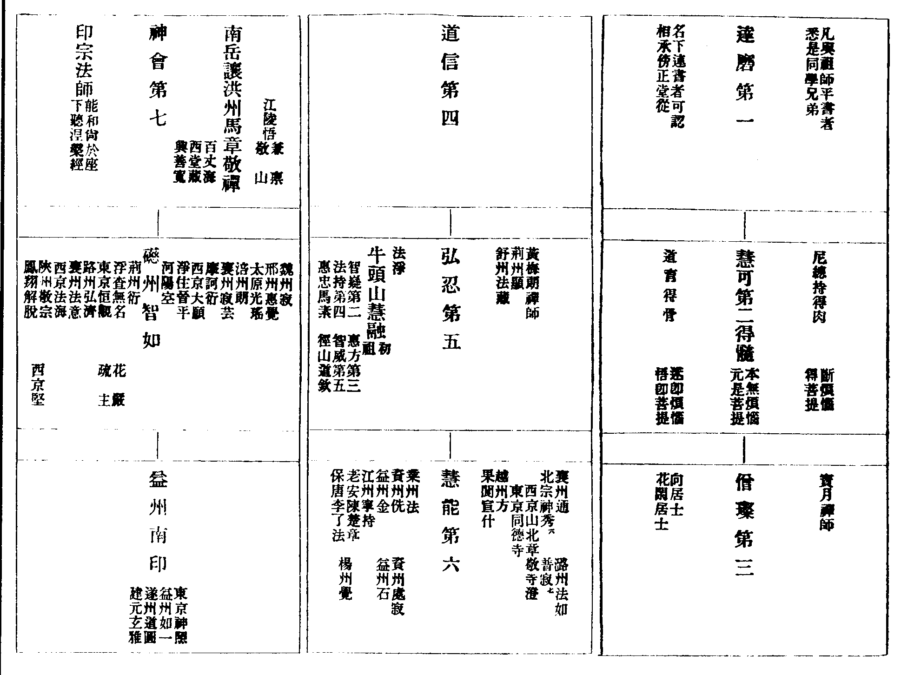

卍新纂大日本續藏經 第63冊
No.1225 中華傳心地禪門師資承襲圖 (1卷)
【唐 裴休問 宗密答】
第 1 卷
No. 1225
中華傳心地禪門師資承襲圖
裴休相國問
禪法大行。宗徒各異。互相詆訿。莫肯會同。切要辨其源流。知其深淺。比雖留意。未得分明。撰錄之時。恐有差錯。伏望略為條流分別。三五紙示及大抵列北宗．南宗。南宗中。荷澤宗．洪州．牛頭等宗。具言其淺深．頓漸．得失之要。便為終身龜鏡也。 (休)再拜。
宗密禪師答
然達磨所傳。本無二法。後隨人變。故似殊途。扄之即俱非。會之即皆是。前者所述傳記。但論直下一宗。若要辨諸宗師承。須知有傍有正。今且敘師資傍正。然後述言教淺深。自然見達磨之心流至荷澤矣。
牛頭宗者。從四祖下傍出。根本有慧融禪師者。道性高簡。神慧聦利。先因多年窮究諸部般若之教。已悟諸法本空．迷情妄執。後遇四祖。印其所解空理。然於空處顯示不空妙性。故不俟久學而悟解洞明。四祖語曰。此法從上只委一人。吾已付囑弟子弘忍訖(即五祖也)。汝可別自建立。後遂於牛頭山別建一宗。當第一祖。展轉乃至六代(後第五祖師智威。有弟子馬素。素有弟子道欽。即徑山是也)。此一宗都不關南北二宗。其南北二宗自出於五祖門下。五祖已前都未有南北之稱。
北宗者。從五祖下傍出。謂有神秀等一十人。同是五祖忍大師弟子。大師印許。各堪為一方之師。故時人云忍生十字(能和尚直承其嫡。非此十數也)。於中。秀及老安．智詵。道德最著。皆為 高宗皇帝之所師敬。子孫承嗣。至今不絕。就中。秀弟子普寂化緣轉盛。為二京法主。三帝門師。但稱達磨之宗。亦不出南北之號。
南宗者。即曹溪能大師。受達磨言旨已來。累代衣法相傳之本宗也。後以神秀於北地大弘漸教。對之。故曰南宗。承稟之由。天下所知。故不敘也。後欲滅度。以法印付囑荷澤。令其傳嗣。傳嗣之由。先已敘之呈上。然甚闕略。今蒙審問。更約承上祖宗傳記稍廣。
傳中敘能和尚處。中間云有襄陽僧神會。俗姓高。年十四(即荷澤也。荷澤是傳法時所居之寺名)。來謁和尚。和尚問。知識遠來大艱辛。將本來否。
答。將來。
答。神會以無住為本。見即是主。
神會杖下思惟。大善知識歷劫難逢。今既得遇。豈惜身命。大師察其深悟情至。故試之也(如堯知舜。歷試諸難)。
傳末又云和尚將入涅槃。默受密語於神會。語云。從上已來。相承准的只付一人。內傳法印以印自心。外傳袈裟標定宗旨。然我為此衣。幾失身命(數被北宗偷衣之事。在此傳之前文。今不能錄)。達磨大師懸記云至六代之後。命如懸絲。即汝是也(此言在敘達磨傳中)。是以此衣宜留鎮山。汝機緣在北。即須過嶺。二十年外當弘此法。廣度眾生。
又問。誰人。
答云。若欲知者。大庾嶺上以網取之(相傳云。嶺上者。高也。荷澤姓高。故密示耳)。
荷澤宗者。全是曹溪之法。無別教旨。為對洪州傍出。故復標其宗號。承稟之由。已如上說。然能和尚滅度後。北宗漸教大行(亦如上敘)。因成頓門弘傳之障。曹溪傳授碑文已被磨換。故二十年中。宗教沉隱(大師遭百種艱難等事。皆如先所呈略傳。廣在本傳。他日具呈)。天寶初。荷澤入洛大播斯門。方顯秀門下師承是傍。法門是漸。既二宗雙行。時人欲揀其異。故標南北之名。自此而始。
問。既荷澤為第七祖。何不立第八乃至九．十。後既不立。何妨據傳衣為憑。但止第六。
答。若據真諦。本絕名數。一猶不存。何言六七。今約俗諦。師資相傳。順世之法。有其所表。如國立七廟。七月而葬。喪服七代。福資七祖(道釋皆同)。經說七佛。持念遍數。壇場物色。作法方便。禮佛遠佛。請僧之限。皆止於七。過則二七。乃至七七。不止於六。不至八九。今傳受儀式。順世生信。何所疑焉。故德宗皇帝貞元十二年勅皇太子集諸禪師。楷定禪門宗旨。搜求傳法傍正。遂有勑下。立荷澤大師為第七祖。內神龍寺見有銘記。又御製七代祖師讚文。見行於世。
洪州宗者。先即六祖下傍出。謂有禪師。姓馬。名道一。先是劒南金和尚弟子也(金之宗源即智詵也。亦非南北)。高節至道。遊方頭陀。隨處坐禪。乃至南嶽。遇讓禪師。論量宗教。理不及讓。方知傳衣付法曹溪為嫡。乃迴心遵稟。便住處州．洪州。或山或郭。廣開供養。接引道流。後於洪州開元寺弘傳讓之言旨。故時人號為洪州宗也。讓即曹溪門下傍出之派徒(曹溪此類數可千餘)。是荷澤之同學。但自率身修行。本不開法。因馬和尚大揚其教。故成一宗之源。
右且略敘諸宗師承。大槩如此。然緣傍正橫竪。交雜難記。今畫出為圖。冀一覧不遺於心腑。謹連次後。

上已敘諸宗師資。今次辨所傳言教深淺得失。然禪門之旨。在乎內照。非筆可述。非言可宣。言雖不及。猶可強言。筆不可及。直難下筆。今不得已而書。望照之於心。無滯於文矣。
然達磨西來。唯傳心法。故自云。我法以心傳心。不立文字。此心是一切眾生清淨本覺。亦名佛性。或云靈覺。迷。起一切煩惱。煩惱亦不離此心。悟。起無邊妙用。妙用亦不離此心。妙用煩惱。功過雖殊。在悟在迷。此心不異。欲求佛道。須悟此心。故歷代祖宗唯傳此也。然若感應相契。則雖一燈傳百千燈。而燈燈無殊。若機教不投。則雖一音演說法。而各各隨所解。故諸宗異說。過在後人。今且各敘諸宗。然始判其差當。
北宗意者。眾生本有覺性。如鏡有明性。煩惱覆之不見。如鏡有塵闇。若依師言教。息滅妄念。念盡則心性覺悟。無所不知。如磨拂昏塵。塵盡則鏡體明淨。無所不照。故彼宗主神秀大師呈五祖偈云。
評曰。此但是染淨緣起之相。反流背習之門。而不覺妄念本空。心性本淨。悟既未徹。修豈稱真(劒南復有淨眾宗旨。與此大同。復有保唐宗。所解似同。所修全異。不可繁敘。他日面奉。一一辨之)。
洪州意者。起心動念。彈指動目。所作所為。皆是佛性。全體之用。更無別用。全體貪嗔癡。造善造惡。受樂受苦。此皆是佛性。如麫作種種飲食。一一皆麫。意以推求此身。四大骨肉．喉舌牙齒。眼耳手足。並不能自語言．見聞．動作。如一念命終。全身都未變壞。即便口不能語。眼不能見。耳不能聞。脚不能行。手不能作。故知能言語動作者。必是佛性。且四大骨肉。一一細推。都不解貪嗔煩惱。故知貪嗔煩惱並是佛性。
佛性體非一切差引種種。而能造作一切差別種種。體非種種者。謂此佛性非聖非凡。非因非果。非善非惡。無色無相。無根無住。乃至無佛無眾生也。能作種種者。謂此性即體之用。故能凡能聖。能因能根。能善能惡。現色現相。能佛能眾生。乃至能貪嗔等。若覈其體性。則畢竟不可見。不可證。如眼不自見眼等。若就其應用。即舉動運為。一切皆是。更無別法而為能證所證。彼意准楞伽經云。如來藏是善不善因。能遍興造一切趣生。受苦樂。與因俱。又。佛語心。經云。或有佛剎揚眉動睛。笑吹謦欬。或動搖等皆是佛事。既悟解之理。一切天真自然。故所修行。理宜順此。而乃不起心斷惡。亦不起心修道。道即是心。不可將心還修於心。惡亦是心。不可將心還斷於心。不斷不造。任運自在。名為解脫人。無法可拘。無佛可作。猶如虗空不增不減。何假添補。何以故。心性之外。更無一法可得故。故但任心。即為修也。
評曰。此與前宗敵體相返。前則朝暮分別。動作一切皆妄。此則朝暮分別。動作一切皆真。奉問疑其互相詆訿。暮肯會同。且所見如此相違。爭不詆訿。若存他。則失己。爭肯會同。
牛頭宗意者。體諸法如夢。本來無事。心境本寂。非今始空。迷之為有。即見榮枯貴賤等事。事跡既有相違相順。故生愛惡等情。情生則諸苦所繫。夢作夢受何損何益。有此能了之智。亦如夢心。乃至設有一法過於涅槃。亦如夢如幻。既達本來無事。理宜喪己忘情。情妄即絕苦因。方度一切苦厄。此以忘情為修也。
評曰。前以念念全真為悟。任心為修。此以本無事為悟。妄情為修。又上三家見解異者。初一切皆妄。次一切皆真。後一切皆無。若就行說者。初伏心滅妄。次信任情性。後休心不起。(宗密)性好勘會。一一曾參。各搜得旨趣如是。若將此語問彼學人。即皆不招承。問有答空。徵空認有。或言俱非。或言皆不可得。修不修等。皆類此也。彼意者。常恐墮於文字。常怕滯於所得。故隨言拂也。有歸心學者。方委細教授。令多時觀照。熟其行解矣。然每宗復有多種方便。拒於外難。誘於徒屬。不可具書。今但羅其意趣。舉其宏綱也。
荷澤宗者。尤難言述。是釋迦降出。達磨遠來之本意也。將前望此。此乃逈異於前。將此攝前。前即全同於此。故難言也。今強言之。謂諸法如夢。諸聖同說。故妄念本寂。塵境本空。空寂之心。靈知不昧。即此空寂寂知。是前達磨所傳空寂心也。任迷任悟。心本自知。不藉緣生。不因境起。迷時煩惱亦知。非煩惱。悟時神變亦知。知非神變。然知之一字。眾妙之源。由迷此知。即起我相。計我我所。愛惡自生。隨愛惡心。即為善惡。善惡之報。受六道形。世世生生。循環不絕。
若得善友開示。頓悟空寂之知。知且無念無形。誰為我相人相。覺諸相空。真心無念。念起即覺。覺之即無。修行妙門唯在此也。故雖備修萬行。唯以無念為宗。但得無念之心。則愛惡自然淡薄。悲智自然增明。罪業自然斷除。功行自然精進。於解則見諸相非相。於行則名無修之修。煩惱盡時。生死即絕。生滅滅已。寂照現前。應用無窮。名之為佛。
上已各敘一宗。今辨明深淺得失。然心貫萬法。義味無邊。諸教開張。禪宗撮略。撮略者。就法有不變．隨緣二義。就人有頓悟．漸修兩門。二義顯。即知一藏經論之旨歸。兩門開。則見一切賢聖之軌轍。達磨深意。實在斯焉。不變隨緣者。然象外之理。直說難證。今以喻為衡鏡。定諸宗之是非(便隨喻以法合之。隨文以注對之。冀法喻一一相照易見也。然初覽時。但請且一向讀喻。辨本末了。然後却再以注文對辨其理)。
如一摩尼珠(一靈心也)。唯圓淨明(空寂知也)。都無一切差別色相(此知本無一切分別。亦無聖凡善惡)。以體明故。對外物時。能現一切差別色相(以體知故。對諸緣時。能分別一切是非好惡。乃至經營造作世出世間種種事數。此是隨緣義也)。色相自有差別。明珠不曾變易(愚智善惡自有差別。憂喜愛憎自有起滅。能知之心不曾間斷。此是不變義也)。
然珠所現色。雖百千般。今且取與明珠相違者之黑色。以況靈明知見與黑暗無明雖即相違。而是一體(法喻已具)。謂如珠現黑色時。徹體全黑。都不見明(靈知之心。在凡夫時。全是迷愚貪愛。都不見如來知見大圓鏡智。故經云。身心等相皆是無明也)。如癡孩子或村野人見之。直是黑珠(迷人但見定見凡夫)。有人語云。此是明珠。灼然不信。却嗔前人。謂為欺誑。任說種種道理。終不聽覧(宗密頻遇如此之類。向道汝今了了能知見。是佛心。灼然不信。却云此是誘三婆二婦之言。直不肯照察。但言某乙鈍根。實不能入。此是大小乘法相及人天教中着相之人意見如此)。縱有肯信是明珠者。緣自覩其黑。亦謂言被黑色纏裹覆障。擬待磨拭揩洗去却黑暗。方得明相出現。始名親見明珠(北宗見解如此)。
復有一類人。指示云。即此黑暗便是明珠。明珠之體。永不可見。欲得識者。即黑便是明珠。乃至即青黃種種皆是。致令愚者的信此言。專記黑相。或認種種相為明珠。或於異時見黑梙子珠。米吹青珠．碧珠。乃至赤珠．琥珀．白石英等珠。皆云是摩尼。或於異時是摩尼珠都不對色時。但有明淨之相。却不認之。以不見有諸色可識認故。疑恐局於一明珠相故(洪州見解如此也。言愚者。彼宗後學也。異時見黑梙子等者。心涉世間。分別塵境時。見貪嗔愛慢之念也。琥珀．石英者。如慈善謙敬之念也。不對色時者。無所念也。但有明淨者。了了自知無念也。疑局者。彼之唯認知是偏局也)。
復有一類人。聞說珠中種種色皆是虗妄。徹體全空。即計此一顆明珠都是其空。便云都無所得。方是達人。認有一法。便是未了。不悟色相皆空之處。乃是不空之珠(牛頭見解如此也。聞說空等者。諸部般若說空之經也。計此一顆等者。計本覺性亦空。無有所認。認有等者。聞說諸法空寂之處。了了能知。是本覺真心。却云不了不知。心體不空。不空者。涅槃經說。如瓶空者。謂瓶中無物。名為瓶空。非謂無瓶。言無者。心之中無分別貪嗔等念。名為心空。非謂無心。言無者。但為遣却心中煩惱也。故知牛頭但遣其非。未顯其是。從此下皆喻荷澤意)。
何如直云唯瑩淨圓明。方是珠體(唯空寂知也。若但說空寂。而不顯知。即何異虗空。亦如圓顆瑩淨之瓷團。雖圓淨而無明性。何名摩尼。何能現影。洪州．牛頭但說無一物。不顯靈知。亦如此也)。其黑色。乃至一切青黃色等。悉是虗妄(善惡分別。舉動運為。如洪州所認。起心動念等。即是一切相。此相皆妄。故經云。凡所有相。皆是虛妄。當知彼宗認虗妄為真性也)。正見黑色時。黑元不黑。但是其明。青元不青。但是其明。乃至赤白黃等一切皆然。但是其明。既即於諸色相處。一一但見瑩淨圓明。即於珠不惑(一切皆空。唯心不變。迷時亦知。知元不迷。念起亦知。知元無念。乃至哀樂喜怒愛惡。一一皆知。知元空寂。空寂而知。即於心性了然不惑。此上皆逈異諸宗也。故初標云將前望此。此即逈異於前)。但於珠不惑。則黑既無黑。黑即是明珠。諸色皆爾。即是有無自在。明黑融通。復何礙哉(此同彼二宗也。黑即無黑。同牛頭。牛頭但云一切皆無。黑即是珠。已下同洪州。洪州云一切皆是佛性。凡聖善惡皆無所礙。故初標但云將此攝前。前即是全同於此。自此已下喻意。再將荷澤本宗結束三宗也)。若認得明珠是能現之體。永無變易(荷澤)。但云黑是珠(洪州宗)。或擬離黑覔珠(北宗)。或言明黑都無者(牛頭宗)。皆是未見珠也(都結)。
問。據大乘經及古今諸宗禪門。乃至荷澤所說。理性皆同。云無生無滅。無為無相。無聖無凡。無是無非。不可證。不可說。今但依此即是。何必要須說靈知耶。
答。此並是遮遣之詞。未為顯示心體。若不指示現今了了常知不昧是自心者。說何為無為無相等耶。是知諸教只說此知無生滅等也。故荷澤於空無相處指示知見。令人認得。便覺自心。經生越世。永無間斷。乃至成佛也。荷澤又収束無為無住。乃至不可說等種種之言。但云空寂知。一切攝盡。空者。空却諸相。猶是遮遣之言。唯寂是實性不變動義。不同空無也。知是當體表顯義。不同分別也。唯此方為真心本體。故始自發心。乃至成佛。唯寂唯知。不變不斷。但隨地位。名義稍殊。謂約了悟時。名為理智(理即寂也。智即知也)。約發心修行時。名為止觀(止息塵緣。契於寂也。觀照性相。冥於知也)。約任運成行。多為定慧(因止緣而心定。定者寂然不變。因觀照而發慧。慧者知無分別也)。約煩惱都盡。功行圓滿。成佛之時。名為菩提涅槃(菩提。梵語。此翻為覺。即是知也。涅槃。梵語。此翻為寂滅。即是寂也)。當知始自發心。乃至畢意。唯寂唯知也。若如二宗。但言空寂無為等者。則闕菩提義也。
答。若據多義以顯一體。即萬法皆是一心。何唯靈覺鑒照等。今就尅體指示。即愚智善惡。乃至禽畜。心性皆然。了了常知。異於木石。其覺智等言。即不通一切。謂迷者不覺。愚者無智。心無記時。即不名鑒照等。豈同心體自然常知。故花嚴疏主答順宗云。無住心體。靈知不昧。又云。任運寂知。又云。雙照寂知。華嚴經亦揀知與智別。況洪州雖云靈覺。但是標眾生有之。如云皆有佛性之言。非的指示。指示則但云能言語等。若細詰之。即云一切假名。無有定法。且統論佛教。有遣顯二門。推其實義。有真空妙有。空其本心。具體具用。今洪州．牛頭以拂跡為至極。但得遣教之意。真空之義。唯成其體。失於顯教之意。妙有之義。闕其用也。
問。洪州以能語言動作等。顯於心性。即當顯教。即是其用。何所闕耶。
答。真心本體有二種用。一者自性本用。二者隨緣應用。猶如銅鏡。銅之質是自性體。銅之明是自性用。明所現影是隨緣用。影即對緣方現。現有千差。明即自性常明。明唯一味。以喻心常寂是自性體。心常知是自性用。此能語言。能分別動作等。是隨緣應用。今洪州指示能語言等。但是隨緣用。闕自性用也。又顯教有比量顯．現量顯。洪州云。心體不可指示。但以能語言等驗之。知有佛性是比量顯也。荷澤直云。心體能知。知即是心。約知以顯心。是現量顯也。洪州闕此。
已上述不變．隨緣二義。
今次明頓悟．漸修兩門者。然真如之理。尚無佛無眾生。況有師資傳授。今既自佛已來。祖祖傳授。即知約人修證趣入之門也。既就人論。即有迷悟．始終．凡聖。從迷而悟。即頓轉凡成聖。即頓悟也。頓悟者。謂無始迷倒。認此四大為身。妄想為心。通認為我。若遇善友。為說如上不變隨緣。性相體用之義。忽悟靈靈知見。是自真心。心本空寂。無邊無相。即是法身。身心不二。是為真我。即與諸佛分毫不殊。故云頓也(此下舉喻。便隨文注。以法合之)。
如有大官(佛性)。夢(迷也)在牢獄(三界)。身(本識)著枷鏁(貪愛)。種種憂苦(一切業報)。百計求出(問法勤修)。遇人喚起(善知識也)。忽然覺悟(聞法心開)。方見自身(法身真我)。元在自家(淨名經云。畢竟空寂舍也)。安樂(寂滅為樂)富貴(體上本有河沙功德也)。與諸朝寮都無別異(同諸佛之真性。法合一一如注可知)。據此法喻。一一分明。足辨夢悟身心本源雖一。論其相用。倒正懸殊。不可覺來還作夢事。以喻心源雖一。迷悟懸殊。夢時拜相(迷時修得大梵天王等位)。不及覺時作尉(悟後初入十信位也)。夢得七寶(迷詩修無量功德也)。不及覺時百錢(悟時持五戒十善)。皆以一妄一真。故不可類(諸教皆云施三千七寶。不如聞一句偈。是此意也)。
今洪州但言貪嗔戒定一種。是佛性作用者。闕於揀辨迷悟倒正之用也。彼意在真如心性。常知如不變之濕性。心既無迷。即非無明。如風頓止。悟後自然攀緣漸息。如波浪漸停。以定慧資薰身心。漸漸自在。乃至神變無礙。普利群生。如春陽氷泮溉灌洗滌。善利萬物也。洪州常云貪．嗔．慈．善皆是佛性。有何別者。如人但觀濕性始終無異。不知濟舟覆舟。功過懸殊。故彼宗於頓悟門雖近。而未的於漸修門。有誤而全垂。牛頭以達空故。於頓悟門而半了。以忘情故。於漸修門而無虧。
北宗但是漸修。全無頓悟。無頓悟故。修亦非真。荷澤則必先頓悟。依悟而修。故經云。若諸菩薩悟淨圓覺(悟也)。以淨覺心。取靜為行。由澄諸念。覺識煩動等(修也)。此頓悟漸修之意。備於一藏大乘。而起信．圓覺．華嚴。是其宗也。
若約各為一類之機。善巧方便。廣開門戶。各各誘引。熏生生之習種。為世世之勝緣。則諸宗所說。亦皆是諸佛之教也。諸經諸論具有其文矣。
中華傳心地禪門師資承襲圖